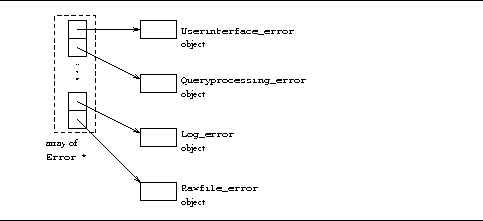

The current error protocol within Minirel, using which each layer informs the layer above about problems it detected is very simplistic. Higher layers can only display all the errors that occurred and not deal with them in any meaningful way. This section proposes an alternate error protocol.
The entire error protocol is based on a base class Error. Every layer derives a class from class Error. Class Error provides virtual functions to display itself, set its error level and error code, and return the level and code. Each layer will overload the methods to provide meaningful information about itself. In this context, an error level indicates the seriousness of the error: the error is fatal, the error will cause the current operation to fail, the error is a warning of impending problems, or the ``error'' is simply a message to the higher layer. Higher layers can inspect the errors returned by lower layers, display them if necessary, and take appropriate action. Error codes are defined by each layer and understood by the layer immediately above.
Globally, there will exist an object of class Errorlist which will store error objects of each layer (there will be a fixed number of layers -- an array of pointers to Error objects would suffice). This object can be asked to display the whole hierarchy of errors or it can be asked to return the error code that a particular layer set, etc. Class Errorlist will also provide a method to clear out the errors in case a fresh start is to be made. Figure 4 illustrates an example object of class Errorlist.

Figure 4: The Errorlist object. It maintains pointers to
Error derived objects for each layer. If this object is asked to
display the entire hierarchy of errors, for example, it will walk
through the array and call the display method of each object.
This enhancement will complicate the code of the layers slightly because they have to set the appropriate object and indicate the error level and the error code. However, the overall design will be much cleaner if a revised error protocol like the one outlined above is used.